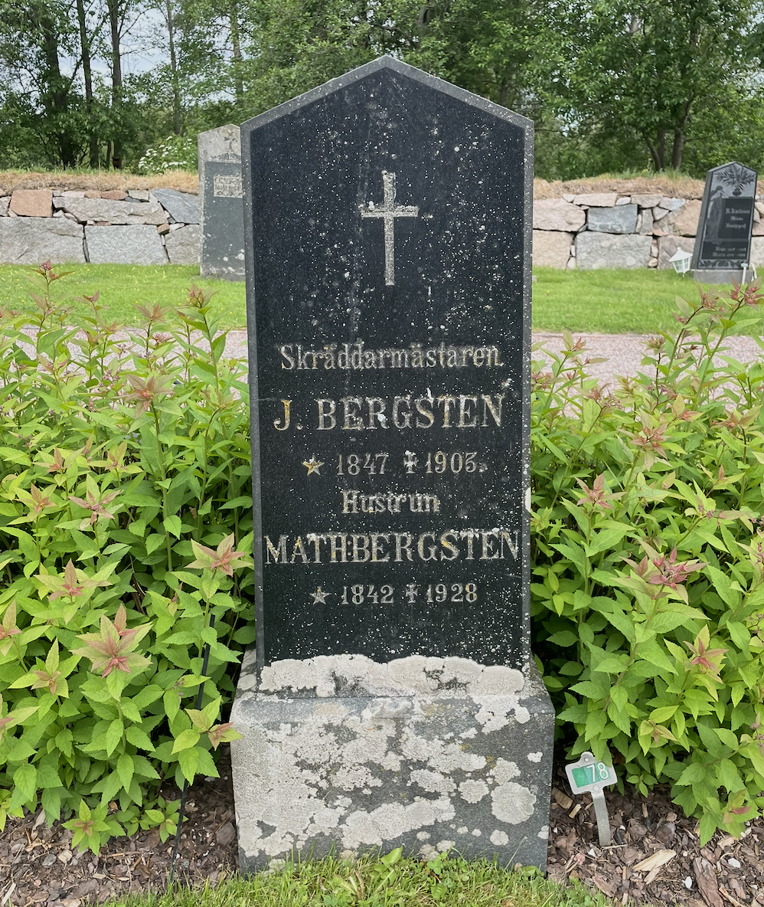

SLÄKTGRAVENS
HISTORIA
Poul vilar i graven där också hans mors mormor Mathilda Sofia f. Lindberg, mors morfar Johan Bergsten och deras son Viktor Bergsten är begravda. Samtliga bodde i Torsång och Johan var skräddarmästare. Dessutom var han Söndagsskollärare och vikarierade ibland i skolan i Torsång.
